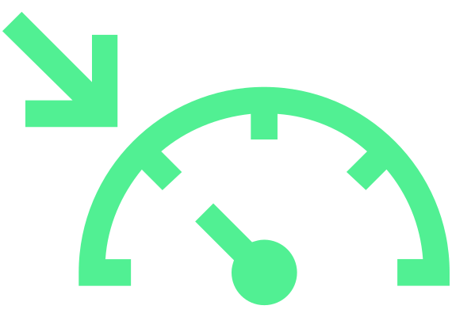

Le régulateur de vitesse maintient la vitesse réglée sans qu’il ne soit nécessaire d'actionner la pédale d'accélérateur.

MISE EN GARDE
Danger de démarrage involontaire du régulateur de vitesse !
Désactiver le régulateur de vitesse après utilisation.
Affichage de l’état sur l’écran du combiné d’instruments
s’allume - le régulateur de vitesse est actif

s’allume - le régulateur de vitesse est actif
Lorsque le régulateur de vitesse démarre, la vitesse réglée est affichée.

s’allume – le régulateur de vitesse est désactivé